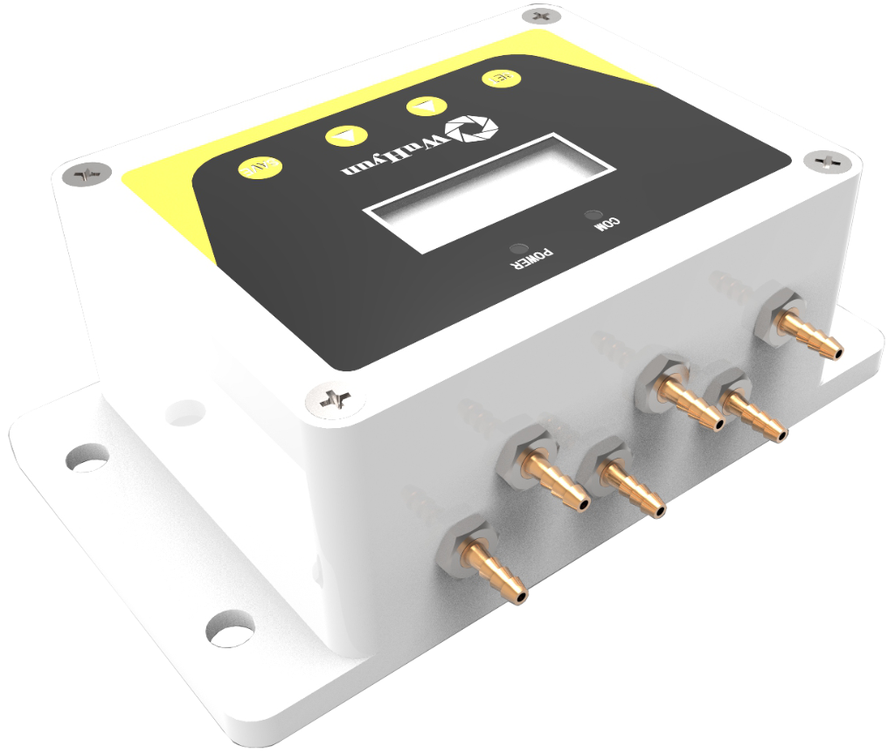
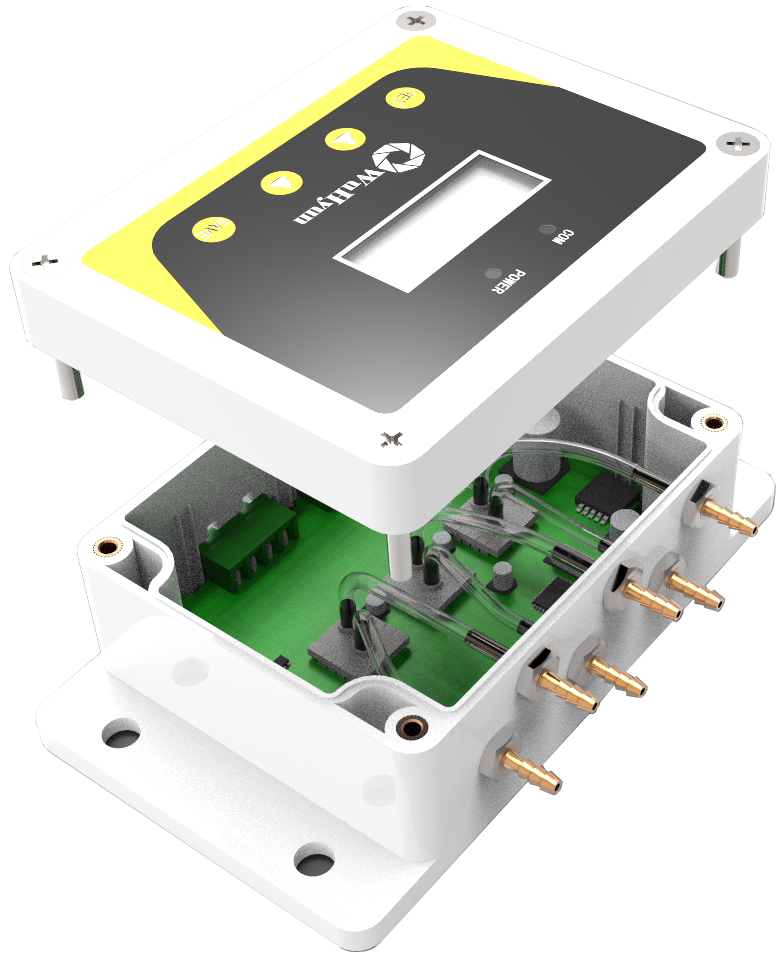
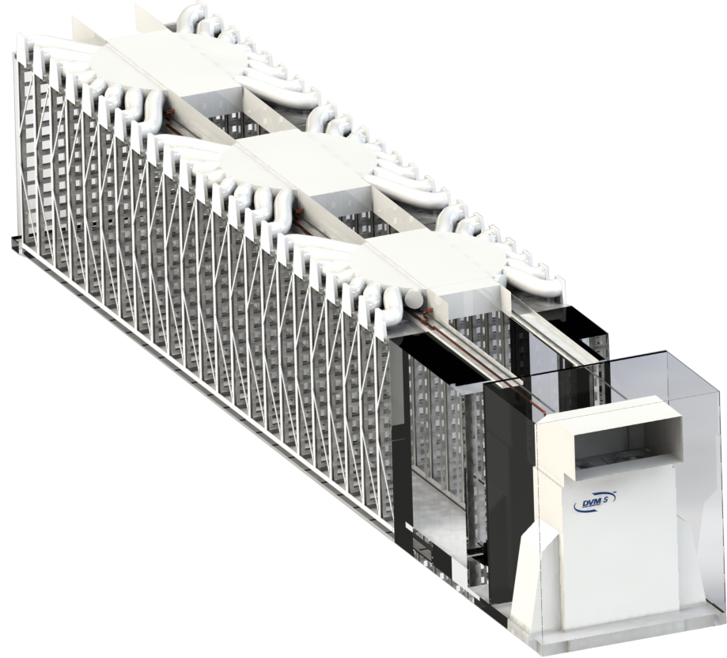

COMPACT TYPE50A

좁은 설치 공간에도
간결한 배수 구성
컴팩트한 배관 구성이 필요한 공조·배기 설비에 적용하기 좋은 크기입니다.
- 50A 연결 배관 대응
- 수직·수평 배관 구성 검토 가능
- 점검 커버를 통한 내부 관리
HVAC / CATEGORY 03
공조 시스템의 운전 안정성과 효율을 높이는 부품 및 제어 제품군입니다.
09 / CLEANABLE LEAK-PROOF TRAP
음압 환경에서 응축수는 원활하게 배출하고, 불필요한 공기 역류는 억제하도록 설계한 세척·점검형 배수 트랩입니다.
산·알칼리·유기 배기 계통의 응축수 배수에 대응하며, 배관 조건과 요구 배수량에 맞춰 50A와 100A 두 가지 크기로 구성할 수 있습니다.
적용 조건 상담 ↗
SIZE CONFIGURATION
형상 차이를 직관적으로 확인할 수 있도록 50A와 100A를 구분했습니다. 최종 선정은 연결 배관, 배수량과 설비 운전 조건을 함께 검토해 결정합니다.
컴팩트한 배관 구성이 필요한 공조·배기 설비에 적용하기 좋은 크기입니다.
배관 구경과 배수 요구가 큰 현장을 고려한 확장형 구조입니다.
Selection note제품 크기는 단순한 외형 차이가 아니라 현장의 배관 구경, 응축수 발생량, 압력 조건을 기준으로 선정합니다.
ENGINEERED DRAINAGE
볼의 움직임을 이용해 평상시에는 공기 유입을 억제하고, 배수가 필요할 때는 유로를 빠르게 확보합니다.
Ball Valve 방식으로 음압 덕트의 밀폐 성능과 안정적인 개폐를 함께 고려했습니다.
고정되지 않은 Ball이 배수 조건에 반응해 낮은 음압에서도 신속한 밀폐와 배수를 지원합니다.
상부 점검 커버를 통해 슬러지와 이물질을 확인하고 내부를 관리할 수 있습니다.
견고한 플랜지 결합 구조로 배관 연결부의 안정성과 장기 유지관리를 고려했습니다.
INSTALLATION LOGIC
드레인 포트의 위치와 배관 동선을 고려해 수직 또는 수평 배수 구성을 검토할 수 있습니다. 소화수처럼 순간적인 배수가 발생하는 상황에서는 Ball의 부력으로 배수 공간을 확보하도록 고안했습니다.
장비 하부 공간과 드레인 포트 위치를 고려한 연결
현장 배관 동선과 점검 접근성을 고려한 연결
10 / INTELLIGENT FAN CONTROL
풍량, 정압, RPM, 진동, 전력, 소음 등 팬의 모든 운전 데이터를 실시간으로 읽어내고, 현장 조건에 맞춘 가변 제어와 공진 회피를 스스로 수행합니다.
Eurus Fan 제어 시스템(FCM)은 송풍기 운전에 필수적인 정밀 센싱과 제어 알고리즘을 일체화하여, 고비용의 별도 자동제어 공사 없이도 상위 디지털 트윈 및 스마트 팩토리(BMS)와 완벽하게 연동되는 지능형 공조 환경을 제공합니다.
FCM 도입 및 기술 상담 ↗
PERFORMANCE AT A GLANCE
실시간 계측 신뢰도와 예지보전 알고리즘을 통해 송풍기 운전 안정성을 극대화합니다.
현장 계통 압력 변동 속에서도 오차 ±5% 이내의 고정밀 풍량 데이터를 실시간 산출합니다.
송풍기 고유 풍량-정압 성능 곡선 상에 현재 운전점을 매핑하여 최적 효율 운전 상태를 직관적으로 파악합니다.
상시 진동 RMS 분석을 통해 위험 공진 주파수 대역을 스스로 회피하고 베어링 고장을 사전 예방합니다.
별도 계측 배관과 외부 제어반 구축 부담을 줄이고 송풍기 맞춤형 제어 인터페이스를 원스톱 제공합니다.
CORE CAPABILITIES
단순 ON/OFF 제어를 넘어 풍량, 차압, 진동, 공기 상태를 종합적으로 다룹니다.
요구 풍량(Set Airflow)에 맞춰 인버터 및 모터 속도를 능동 제어하며, 여러 대의 팬이 병렬 운전(Parallel Operation)할 때도 전 장비에 균일한 풍량을 분배합니다.
공조 덕트 계통의 정압 변동 패턴을 실시간 추적하여 필터 막힘, 로터, 댐퍼 등 주요 구성품의 부하 상태를 진단하고 이상 발생 시 즉각 경보를 발생시킵니다.
팬과 모터의 진동(속도/가속도 RMS)을 연속 모니터링하여 공진 주파수 영역 진입을 사전에 회피하고, 베어링 이상 마모를 조기에 감지하여 불시 정지 사고를 방지합니다.
풍량, 계통정압, 회전수(RPM), 전력, 소음, 진동, 공기 온·습도 및 밀도까지 필수 지표를 한 화면에 통합 표출하며 한계 도달 시 시각적 경고(Visual Hazard)를 제공합니다.
ENGINEERED HARDWARE
기존의 복잡한 외부 계측 배관과 분산된 센서를 송풍기 구조에 최적화된 모듈로 통합했습니다.

고정밀 차압 센서와 내부 배관 튜브를 방진 인클로저 내부에 컴팩트하게 일체화했습니다. 현장 LCD 창과 직관적 버튼 조작을 통해 별도 툴 없이도 파라미터를 즉시 설정할 수 있습니다.
흡입구 차압부터 모터 제어까지 일원화된 신호 체계로 노이즈를 최소화합니다.
U자관 노즐 다채널 차압을 정밀 계측하여 실시간 풍량(CMH)을 ±5% 오차 내로 연속 연산합니다.
온도(℃), 상대습도(%), 공기 밀도(kg/m³)를 실시간 반영해 계절별 공기 조건 변화를 자동 보정합니다.
진동 RMS를 상시 계측하여 팬-모터 고유 진동 대역을 감지하고 위험 공진 구간을 자동 회피합니다.
AC 팬의 인버터(VFD) 주파수 제어 및 EC 팬 디지털 속도 제어에 유연하게 대응합니다.
REAL-TIME TELEMETRY & DIGITAL TWIN
복잡한 원시 데이터 대신, 송풍기 성능 곡선 위에 현재 운전점을 시각화하여 상태를 즉각 판단합니다.
가상 공조 모델에 송풍기 실시간 운전점과 부하 데이터를 동기화하여 전체 플랜트 공기 흐름을 정밀 시뮬레이션합니다.
생산 공정 부하 변동에 따라 송풍기 풍량을 능동 조절하여 공장 전체의 피크 전력과 에너지 비용을 대폭 절감합니다.
BACnet, Modbus 등 산업 표준 통신을 통해 기존 건물에너지관리시스템(BMS)에 별도 게이트웨이 없이 즉시 통합됩니다.
TARGET APPLICATIONS
가장 까다로운 제조 조건과 연속 공정에서 FCM의 신뢰성이 검증되고 있습니다.
OAC Fan(외기조화기), 클린룸 순환 팬, 옥상 배기(Roof Exhaust) 등 초정밀 풍량과 차압 균일화가 수율을 좌우하는 첨단 전자 제조 공정
이차전지(배터리) 전극·조립 공정 및 바이오 제약 시설 등 극저습도 환경과 급·배기 밸런스가 핵심인 제습 공조 시스템
발전소, 자동차 생산 공정, 화학 플랜트 등 365일 가동 중단이 허용되지 않는 고신뢰성 연속 운전 설비
11 / AIR HANDLING UNIT MANAGEMENT
실시간 습공기선도(Psychrometric Chart) 분석과 5대 통합 제어 알고리즘으로 외기, 코일, 팬, 열교환기, 필터를 최적 상태로 무인 자동 운전합니다.
ECM(Eco Air Conditioning Management)은 독자 특허 기술을 기반으로 외기의 엔탈피를 실시간 연산하여 자연 외기냉방(Free Cooling) 효과를 극대화하고, 불필요한 과냉각과 과가열을 방지하여 대규모 생산 시설의 공조 에너지를 최대 25% 절감합니다.
ECM 도입 및 에너지 진단 상담 ↗
PERFORMANCE AT A GLANCE
단순한 스케줄 제어를 넘어, 공기의 열역학적 상태점을 실시간 계산해 가장 경제적인 운전점을 찾습니다.
외기 엔탈피 기반 Free Cooling과 팬 VAV 가변 풍량 제어로 연간 냉난방 소비전력을 최대 25% 절감합니다.
공조기 다변수 상태점 실시간 해석 및 지능형 무인 운전 제어 알고리즘 특허 등록을 완료했습니다.
온도·습도·밀도·엔탈피를 실시간 공기선도 좌표로 추적하여 최적의 결로 방지 및 쾌적선을 유지합니다.
사계절 외기 기상 조건과 실내 생산 부하에 맞춰 댐퍼, 코일, 팬 운전 모드를 스스로 판단·전환합니다.
CORE CONTROL MODULES
외기 도입부터 배기 열회수까지 모든 공기 처리 과정을 지능형 제어망으로 일원화합니다.
실내외 공기의 엔탈피(열량)를 정밀 비교하여, 외기 조건이 유리할 때 댐퍼를 능동 개방해 냉동기 가동을 최소화하는 자연 냉각을 수행합니다.
요구 온·습도에 맞춰 냉·온수 밸브와 가습량을 0~100% 연속 비례(PID) 제어하여 불필요한 과냉각과 재열 손실을 방지합니다.
정풍량(CAV) 제어와 생산 부하 연동형 가변풍량(VAV) 제어를 지원하여, 필요 시점에 최적 풍량만을 공급함으로써 송풍 동력을 절감합니다.
배기(EA)로 버려지는 폐열을 회수하는 전열/현열 열교환기의 바이패스 댐퍼와 운전 모드를 능동 전환하여 열회수 효율을 극대화합니다.
프리·미디엄·헤파 필터 각 단의 전후단 차압을 상시 감시하여 필터 분진 막힘 상태를 진단하고 교체 주기를 사전에 예지 안내합니다.
REAL-TIME PSYCHROMETRIC CONTROL
단순 온도 감시를 넘어 공기의 엔탈피와 절대습도 상태점을 추적하여 최적의 에너지 경로를 제어합니다.
실외 엔탈피가 실내보다 낮아 자연 냉각 댐퍼 개도율을 최대화합니다.
AHU DIGITAL TWIN VIEW
공조기 내부 댐퍼, 코일, 팬, 필터의 실시간 제어 현황을 직관적인 다이어그램 인터페이스로 모니터링합니다.
실시간 엔탈피 비교 결과에 따라 최적 외기 도입량을 자동 유지합니다.
필터 단별 차압 센싱으로 분진 오염도를 실시간 진단하고 송풍 풍량을 자동 보상합니다.
외기 냉열을 최우선 활용하여 냉수 코일 밸브 개도율을 최소화해 에너지를 절감합니다.
실내 실시간 차압 및 환기 부하에 맞춰 인버터 속도를 능동 제어합니다.
반도체, 디스플레이, 바이오 제약 등 24시간 일정한 온·습도와 정밀 차압 관리가 필수적인 제조 공정 공조기
연중 지속되는 대규모 전산실 발열을 외기냉방(Free Cooling) 엔탈피 제어로 냉방 전력을 획기적으로 낮추는 전산 공조기
사계절 실외 기상 변화에 능동 대응하여 중앙 냉난방 플랜트 에너지 비용을 25% 절감하는 지능형 AHU 시스템